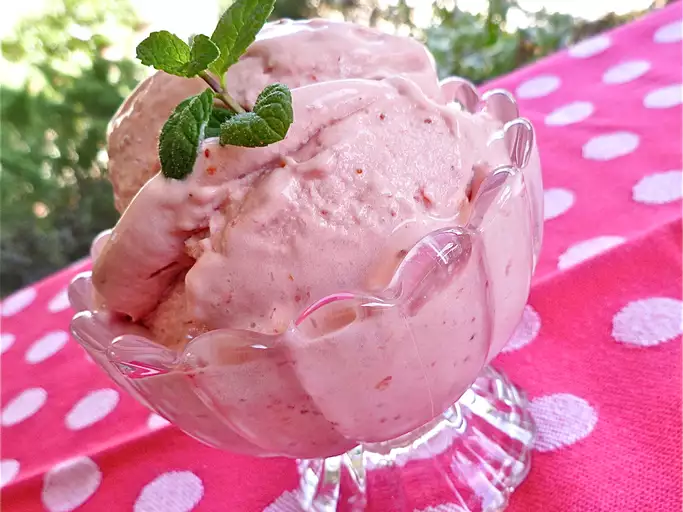

STRAWBERRY ICE CREAM

Descriptiom
This strawberry ice cream recipe uses egg yolks, cream, sugar, and fresh strawberries to make a fabulous frozen dessert.
Ingredients
- 1 quart fresh strawberries, hulled
- 1 ½ cups heavy cream, divided
- ¾ cup white sugar
- 3 egg yolks
- 3 tablespoons light corn syrup
Steps
- Place strawberries into the container of a blender or food processor; puree until smooth. Pour into a large bowl; set aside.
- Heat 1 1/4 cups of cream in a saucepan over medium heat until it begins to bubble at the edge of the pan. Whisk sugar, egg yolks,
remaining 1/4 cup cream, and corn syrup together in a large bowl. Gradually pour the hot cream into egg yolk mixture, whisking constantly. Return mixture to the saucepan and heat until thick enough to coat the back of a metal spoon, about 5 minutes. Do not allow the mixture to boil. Strain custard into berry puree through a sieve; mix well and refrigerate until chilled.
- Fill an ice cream maker with the mixture, and freeze according to the manufacturer's instructions.